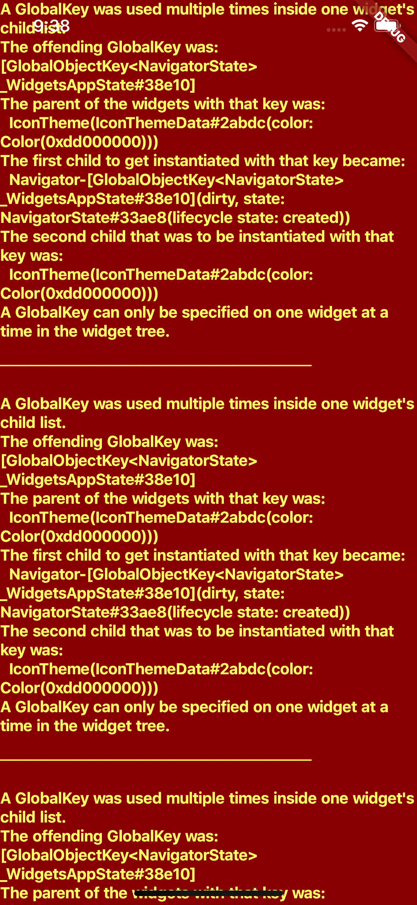
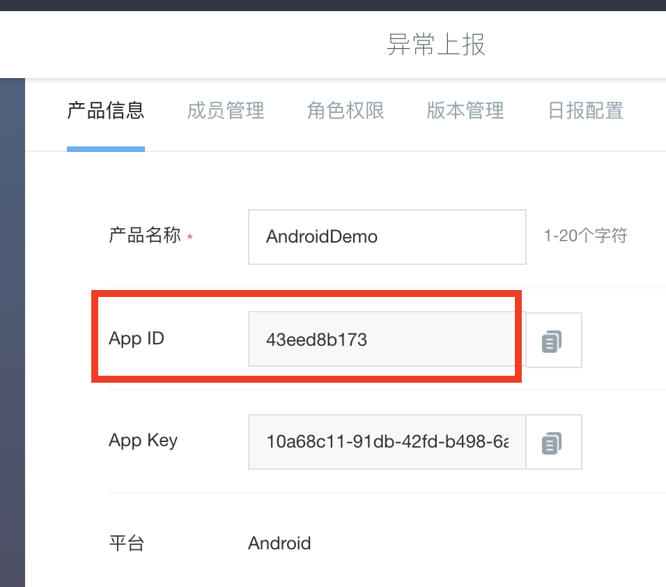
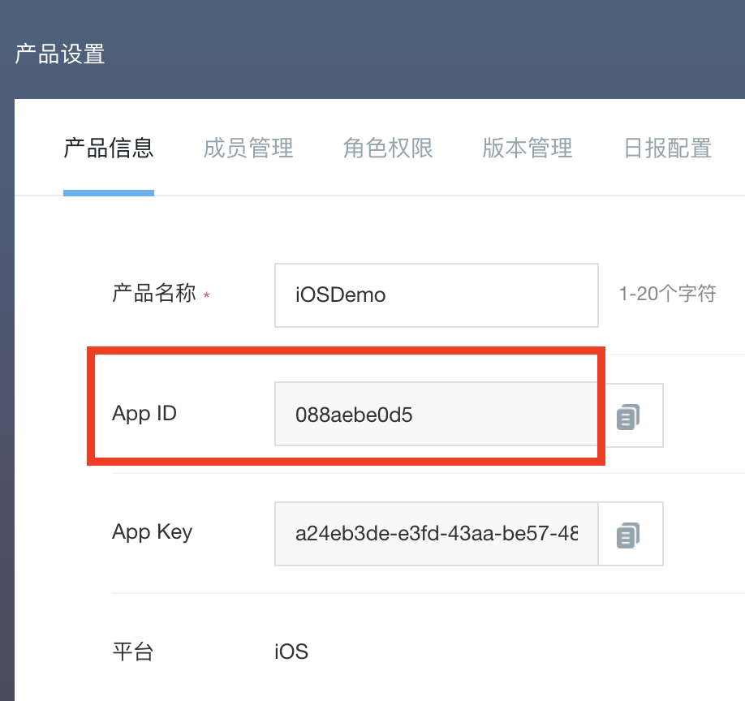
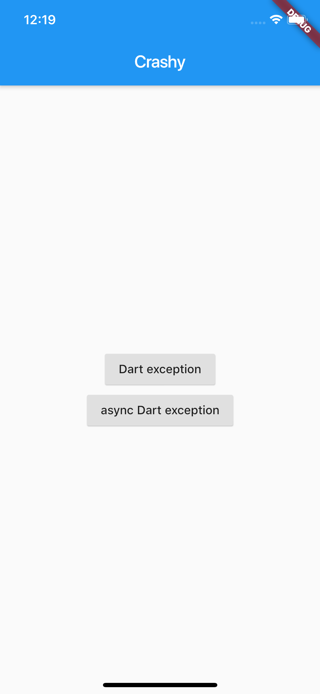
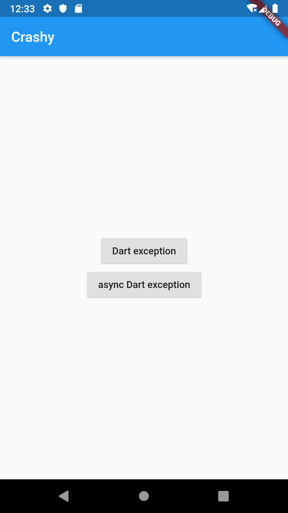
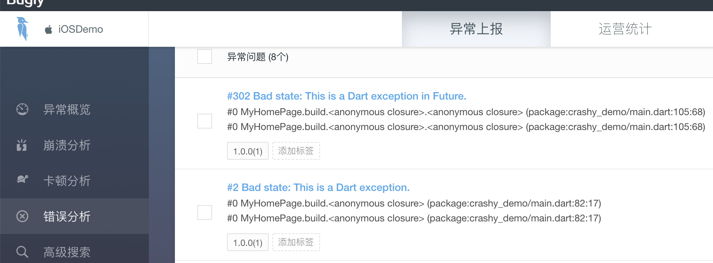
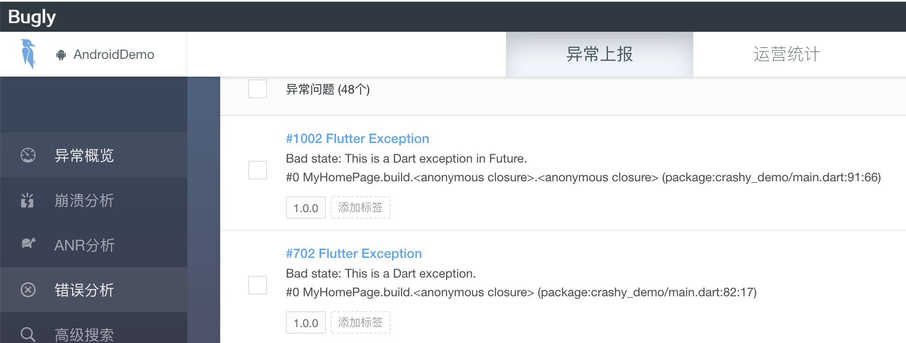

- 00 开篇词 为什么每一位大前端从业者都应该学习Flutter？.md.html
- 01 预习篇 · 从0开始搭建Flutter工程环境.md.html
- 02 预习篇 · Dart语言概览.md.html
- 03 深入理解跨平台方案的历史发展逻辑.md.html
- 04 Flutter区别于其他方案的关键技术是什么？.md.html
- 05 从标准模板入手，体会Flutter代码是如何运行在原生系统上的.md.html
- 06 基础语法与类型变量：Dart是如何表示信息的？.md.html
- 07 函数、类与运算符：Dart是如何处理信息的？.md.html
- 08 综合案例：掌握Dart核心特性.md.html
- 09 Widget，构建Flutter界面的基石.md.html
- 10 Widget中的State到底是什么？.md.html
- 11 提到生命周期，我们是在说什么？.md.html
- 12 经典控件（一）：文本、图片和按钮在Flutter中怎么用？.md.html
- 13 经典控件（二）：UITableView_ListView在Flutter中是什么？.md.html
- 14 经典布局：如何定义子控件在父容器中排版的位置？.md.html
- 15 组合与自绘，我该选用何种方式自定义Widget？.md.html
- 16 从夜间模式说起，如何定制不同风格的App主题？.md.html
- 17 依赖管理（一）：图片、配置和字体在Flutter中怎么用？.md.html
- 18 依赖管理（二）：第三方组件库在Flutter中要如何管理？.md.html
- 19 用户交互事件该如何响应？.md.html
- 20 关于跨组件传递数据，你只需要记住这三招.md.html
- 21 路由与导航，Flutter是这样实现页面切换的.md.html
- 22 如何构造炫酷的动画效果？.md.html
- 23 单线程模型怎么保证UI运行流畅？.md.html
- 24 HTTP网络编程与JSON解析.md.html
- 25 本地存储与数据库的使用和优化.md.html
- 26 如何在Dart层兼容Android_iOS平台特定实现？（一）.md.html
- 27 如何在Dart层兼容Android_iOS平台特定实现？（二）.md.html
- 28 如何在原生应用中混编Flutter工程？.md.html
- 29 混合开发，该用何种方案管理导航栈？.md.html
- 30 为什么需要做状态管理，怎么做？.md.html
- 31 如何实现原生推送能力？.md.html
- 32 适配国际化，除了多语言我们还需要注意什么_.md.html
- 33 如何适配不同分辨率的手机屏幕？.md.html
- 34 如何理解Flutter的编译模式？.md.html
- 35 Hot Reload是怎么做到的？.md.html
- 36 如何通过工具链优化开发调试效率？.md.html
- 37 如何检测并优化Flutter App的整体性能表现？.md.html
- 38 如何通过自动化测试提高交付质量？.md.html
- 39 线上出现问题，该如何做好异常捕获与信息采集？.md.html
- 40 衡量Flutter App线上质量，我们需要关注这三个指标.md.html
- 41 组件化和平台化，该如何组织合理稳定的Flutter工程结构？.md.html
- 42 如何构建高效的Flutter App打包发布环境？.md.html
- 43 如何构建自己的Flutter混合开发框架（一）？.md.html
- 44 如何构建自己的Flutter混合开发框架（二）？.md.html
- 特别放送 温故而知新，与你说说专栏的那些思考题.md.html
- 结束语 勿畏难，勿轻略.md.html
- 捐赠
39 线上出现问题，该如何做好异常捕获与信息采集？
你好，我是陈航。
在上一篇文章中，我与你分享了如何为一个Flutter工程编写自动化测试用例。设计一个测试用例的基本步骤可以分为3步，即定义、执行和验证，而Flutter提供的单元测试和UI测试框架则可以帮助我们简化这些步骤。
其中，通过单元测试，我们可以很方便地验证单个函数、方法或类的行为，还可以利用mockito定制外部依赖返回任意数据，从而让测试更可控；而UI测试则提供了与Widget交互的能力，我们可以模仿用户行为，对应用进行相应的交互操作，确认其功能是否符合预期。
通过自动化测试，我们可以把重复的人工操作变成自动化的验证步骤，从而在开发阶段更及时地发现问题。但终端设备的碎片化，使得我们终究无法在应用开发期就完全模拟出真实用户的运行环境。所以，无论我们的应用写得多么完美、测试得多么全面，总是无法完全避免线上的异常问题。
这些异常，可能是因为不充分的机型适配、用户糟糕的网络状况；也可能是因为Flutter框架自身的Bug，甚至是操作系统底层的问题。这些异常一旦发生，Flutter应用会无法响应用户的交互事件，轻则报错，重则功能无法使用甚至闪退，这对用户来说都相当不友好，是开发者最不愿意看到的。
所以，我们要想办法去捕获用户的异常信息，将异常现场保存起来，并上传至服务器，这样我们就可以分析异常上下文，定位引起异常的原因，去解决此类问题了。那么今天，我们就一起来学习下Flutter异常的捕获和信息采集，以及对应的数据上报处理。
Flutter异常
Flutter异常指的是，Flutter程序中Dart代码运行时意外发生的错误事件。我们可以通过与Java类似的try-catch机制来捕获它。但与Java不同的是，Dart程序不强制要求我们必须处理异常。
这是因为，Dart采用事件循环的机制来运行任务，所以各个任务的运行状态是互相独立的。也就是说，即便某个任务出现了异常我们没有捕获它，Dart程序也不会退出，只会导致当前任务后续的代码不会被执行，用户仍可以继续使用其他功能。
Dart异常，根据来源又可以细分为App异常和Framework异常。Flutter为这两种异常提供了不同的捕获方式，接下来我们就一起看看吧。
App异常的捕获方式
App异常，就是应用代码的异常，通常由未处理应用层其他模块所抛出的异常引起。根据异常代码的执行时序，App异常可以分为两类，即同步异常和异步异常：同步异常可以通过try-catch机制捕获，异步异常则需要采用Future提供的catchError语句捕获。
这两种异常的捕获方式，如下代码所示：
//使用try-catch捕获同步异常
try {
throw StateError('This is a Dart exception.');
}
catch(e) {
print(e);
}
//使用catchError捕获异步异常
Future.delayed(Duration(seconds: 1))
.then((e) => throw StateError('This is a Dart exception in Future.'))
.catchError((e)=>print(e));
//注意，以下代码无法捕获异步异常
try {
Future.delayed(Duration(seconds: 1))
.then((e) => throw StateError('This is a Dart exception in Future.'))
}
catch(e) {
print("This line will never be executed. ");
}
需要注意的是，这两种方式是不能混用的。可以看到，在上面的代码中，我们是无法使用try-catch去捕获一个异步调用所抛出的异常的。
同步的try-catch和异步的catchError，为我们提供了直接捕获特定异常的能力，而如果我们想集中管理代码中的所有异常，Flutter也提供了Zone.runZoned方法。
我们可以给代码执行对象指定一个Zone，在Dart中，Zone表示一个代码执行的环境范围，其概念类似沙盒，不同沙盒之间是互相隔离的。如果我们想要观察沙盒中代码执行出现的异常，沙盒提供了onError回调函数，拦截那些在代码执行对象中的未捕获异常。
在下面的代码中，我们将可能抛出异常的语句放置在了Zone里。可以看到，在没有使用try-catch和catchError的情况下，无论是同步异常还是异步异常，都可以通过Zone直接捕获到：
runZoned(() {
//同步抛出异常
throw StateError('This is a Dart exception.');
}, onError: (dynamic e, StackTrace stack) {
print('Sync error caught by zone');
});
runZoned(() {
//异步抛出异常
Future.delayed(Duration(seconds: 1))
.then((e) => throw StateError('This is a Dart exception in Future.'));
}, onError: (dynamic e, StackTrace stack) {
print('Async error aught by zone');
});
因此，如果我们想要集中捕获Flutter应用中的未处理异常，可以把main函数中的runApp语句也放置在Zone中。这样在检测到代码中运行异常时，我们就能根据获取到的异常上下文信息，进行统一处理了：
runZoned<Future<Null>>(() async {
runApp(MyApp());
}, onError: (error, stackTrace) async {
//Do sth for error
});
接下来，我们再看看Framework异常应该如何捕获吧。
Framework异常的捕获方式
Framework异常，就是Flutter框架引发的异常，通常是由应用代码触发了Flutter框架底层的异常判断引起的。比如，当布局不合规范时，Flutter就会自动弹出一个触目惊心的红色错误界面，如下所示：

图1 Flutter布局错误提示
这其实是因为，Flutter框架在调用build方法构建页面时进行了try-catch 的处理，并提供了一个ErrorWidget，用于在出现异常时进行信息提示：
@override
void performRebuild() {
Widget built;
try {
//创建页面
built = build();
} catch (e, stack) {
//使用ErrorWidget创建页面
built = ErrorWidget.builder(_debugReportException(ErrorDescription("building $this"), e, stack));
...
}
...
}
这个页面反馈的信息比较丰富，适合开发期定位问题。但如果让用户看到这样一个页面，就很糟糕了。因此，我们通常会重写ErrorWidget.builder方法，将这样的错误提示页面替换成一个更加友好的页面。
下面的代码演示了自定义错误页面的具体方法。在这个例子中，我们直接返回了一个居中的Text控件：
ErrorWidget.builder = (FlutterErrorDetails flutterErrorDetails){
return Scaffold(
body: Center(
child: Text("Custom Error Widget"),
)
);
};
运行效果如下所示：
图2 自定义错误提示页面
比起之前触目惊心的红色错误页面，白色主题的自定义页面看起来稍微友好些了。需要注意的是，ErrorWidget.builder方法提供了一个参数details用于表示当前的错误上下文，为避免用户直接看到错误信息，这里我们并没有将它展示到界面上。但是，我们不能丢弃掉这样的异常信息，需要提供统一的异常处理机制，用于后续分析异常原因。
为了集中处理框架异常，Flutter提供了FlutterError类，这个类的onError属性会在接收到框架异常时执行相应的回调。因此，要实现自定义捕获逻辑，我们只要为它提供一个自定义的错误处理回调即可。
在下面的代码中，我们使用Zone提供的handleUncaughtError语句，将Flutter框架的异常统一转发到当前的Zone中，这样我们就可以统一使用Zone去处理应用内的所有异常了：
FlutterError.onError = (FlutterErrorDetails details) async {
//转发至Zone中
Zone.current.handleUncaughtError(details.exception, details.stack);
};
runZoned<Future<Null>>(() async {
runApp(MyApp());
}, onError: (error, stackTrace) async {
//Do sth for error
});
异常上报
到目前为止，我们已经捕获到了应用中所有的未处理异常。但如果只是把这些异常在控制台中打印出来还是没办法解决问题，我们还需要把它们上报到开发者能看到的地方，用于后续分析定位并解决问题。
关于开发者数据上报，目前市面上有很多优秀的第三方SDK服务厂商，比如友盟、Bugly，以及开源的Sentry等，而它们提供的功能和接入流程都是类似的。考虑到Bugly的社区活跃度比较高，因此我就以它为例，与你演示在抓取到异常后，如何实现自定义数据上报。
Dart接口实现
目前Bugly仅提供了原生Android/iOS的SDK，因此我们需要采用与第31篇文章“如何实现原生推送能力？”中同样的插件工程，为Bugly的数据上报提供Dart层接口。
与接入Push能力相比，接入数据上报要简单得多，我们只需要完成一些前置应用信息关联绑定和SDK初始化工作，就可以使用Dart层封装好的数据上报接口去上报异常了。可以看到，对于一个应用而言，接入数据上报服务的过程，总体上可以分为两个步骤：
- 初始化Bugly SDK；
- 使用数据上报接口。
这两步对应着在Dart层需要封装的2个原生接口调用，即setup和postException，它们都是在方法通道上调用原生代码宿主提供的方法。考虑到数据上报是整个应用共享的能力，因此我们将数据上报类FlutterCrashPlugin的接口都封装成了单例：
class FlutterCrashPlugin {
//初始化方法通道
static const MethodChannel _channel =
const MethodChannel('flutter_crash_plugin');
static void setUp(appID) {
//使用app_id进行SDK注册
_channel.invokeMethod("setUp",{'app_id':appID});
}
static void postException(error, stack) {
//将异常和堆栈上报至Bugly
_channel.invokeMethod("postException",{'crash_message':error.toString(),'crash_detail':stack.toString()});
}
}
Dart层是原生代码宿主的代理，可以看到这一层的接口设计还是比较简单的。接下来，我们分别去接管数据上报的Android和iOS平台上完成相应的实现。
iOS接口实现
考虑到iOS平台的数据上报配置工作相对较少，因此我们先用Xcode打开example下的iOS工程进行插件开发工作。需要注意的是，由于iOS子工程的运行依赖于Flutter工程编译构建产物，所以在打开iOS工程进行开发前，你需要确保整个工程代码至少build过一次，否则IDE会报错。
备注：以下操作步骤参考Bugly异常上报iOS SDK接入指南。
首先，我们需要在插件工程下的flutter_crash_plugin.podspec文件中引入Bugly SDK，即Bugly，这样我们就可以在原生工程中使用Bugly提供的数据上报功能了：
Pod::Spec.new do |s|
...
s.dependency 'Bugly'
end
然后，在原生接口FlutterCrashPlugin类中，依次初始化插件实例、绑定方法通道，并在方法通道中先后为setup与postException提供Bugly iOS SDK的实现版本：
@implementation FlutterCrashPlugin
+ (void)registerWithRegistrar:(NSObject<FlutterPluginRegistrar>*)registrar {
//注册方法通道
FlutterMethodChannel* channel = [FlutterMethodChannel
methodChannelWithName:@"flutter_crash_plugin"
binaryMessenger:[registrar messenger]];
//初始化插件实例，绑定方法通道
FlutterCrashPlugin* instance = [[FlutterCrashPlugin alloc] init];
//注册方法通道回调函数
[registrar addMethodCallDelegate:instance channel:channel];
}
- (void)handleMethodCall:(FlutterMethodCall*)call result:(FlutterResult)result {
if([@"setUp" isEqualToString:call.method]) {
//Bugly SDK初始化方法
NSString *appID = call.arguments[@"app_id"];
[Bugly startWithAppId:appID];
} else if ([@"postException" isEqualToString:call.method]) {
//获取Bugly数据上报所需要的各个参数信息
NSString *message = call.arguments[@"crash_message"];
NSString *detail = call.arguments[@"crash_detail"];
NSArray *stack = [detail componentsSeparatedByString:@"\n"];
//调用Bugly数据上报接口
[Bugly reportExceptionWithCategory:4 name:message reason:stack[0] callStack:stack extraInfo:@{} terminateApp:NO];
result(@0);
}
else {
//方法未实现
result(FlutterMethodNotImplemented);
}
}
@end
至此，在完成了Bugly iOS SDK的接口封装之后，FlutterCrashPlugin插件的iOS部分也就搞定了。接下来，我们去看看Android部分如何实现吧。
Android接口实现
与iOS类似，我们需要使用Android Studio打开example下的android工程进行插件开发工作。同样，在打开android工程前，你需要确保整个工程代码至少build过一次，否则IDE会报错。
备注：以下操作步骤参考Bugly异常上报Android SDK接入指南
首先，我们需要在插件工程下的build.gradle文件引入Bugly SDK，即crashreport与nativecrashreport，其中前者提供了Java和自定义异常的的数据上报能力，而后者则是JNI的异常上报封装 ：
dependencies {
implementation 'com.tencent.bugly:crashreport:latest.release'
implementation 'com.tencent.bugly:nativecrashreport:latest.release'
}
然后，在原生接口FlutterCrashPlugin类中，依次初始化插件实例、绑定方法通道，并在方法通道中先后为setup与postException提供Bugly Android SDK的实现版本：
public class FlutterCrashPlugin implements MethodCallHandler {
//注册器，通常为MainActivity
public final Registrar registrar;
//注册插件
public static void registerWith(Registrar registrar) {
//注册方法通道
final MethodChannel channel = new MethodChannel(registrar.messenger(), "flutter_crash_plugin");
//初始化插件实例，绑定方法通道，并注册方法通道回调函数
channel.setMethodCallHandler(new FlutterCrashPlugin(registrar));
}
private FlutterCrashPlugin(Registrar registrar) {
this.registrar = registrar;
}
@Override
public void onMethodCall(MethodCall call, Result result) {
if(call.method.equals("setUp")) {
//Bugly SDK初始化方法
String appID = call.argument("app_id");
CrashReport.initCrashReport(registrar.activity().getApplicationContext(), appID, true);
result.success(0);
}
else if(call.method.equals("postException")) {
//获取Bugly数据上报所需要的各个参数信息
String message = call.argument("crash_message");
String detail = call.argument("crash_detail");
//调用Bugly数据上报接口
CrashReport.postException(4,"Flutter Exception",message,detail,null);
result.success(0);
}
else {
result.notImplemented();
}
}
}
在完成了Bugly Android接口的封装之后，由于Android系统的权限设置较细，考虑到Bugly还需要网络、日志读取等权限，因此我们还需要在插件工程的AndroidManifest.xml文件中，将这些权限信息显示地声明出来，完成对系统的注册：
<manifest xmlns:android="http://schemas.android.com/apk/res/android"
package="com.hangchen.flutter_crash_plugin">
<!-- 电话状态读取权限 -->
<uses-permission android:name="android.permission.READ_PHONE_STATE" />
<!-- 网络权限 -->
<uses-permission android:name="android.permission.INTERNET" />
<!-- 访问网络状态权限 -->
<uses-permission android:name="android.permission.ACCESS_NETWORK_STATE" />
<!-- 访问wifi状态权限 -->
<uses-permission android:name="android.permission.ACCESS_WIFI_STATE" />
<!-- 日志读取权限 -->
<uses-permission android:name="android.permission.READ_LOGS" />
</manifest>
至此，在完成了极光Android SDK的接口封装和权限配置之后，FlutterCrashPlugin插件的Android部分也搞定了。
FlutterCrashPlugin插件为Flutter应用提供了数据上报的封装，不过要想Flutter工程能够真正地上报异常消息，我们还需要为Flutter工程关联Bugly的应用配置。
应用工程配置
在单独为Android/iOS应用进行数据上报配置之前，我们首先需要去Bugly的官方网站，为应用注册唯一标识符（即AppKey）。这里需要注意的是，在Bugly中，Android应用与iOS应用被视为不同的产品，所以我们需要分别注册：

图3 Android应用Demo配置

图4 iOS应用Demo配置
在得到了AppKey之后，我们需要依次进行Android与iOS的配置工作。
iOS的配置工作相对简单，整个配置过程完全是应用与Bugly SDK的关联工作，而这些关联工作仅需要通过Dart层调用setUp接口，访问原生代码宿主所封装的Bugly API就可以完成，因此无需额外操作。
而Android的配置工作则相对繁琐些。由于涉及NDK和Android P网络安全的适配，我们还需要分别在build.gradle和AndroidManifest.xml文件进行相应的配置工作。
首先，由于Bugly SDK需要支持NDK，因此我们需要在App的build.gradle文件中为其增加NDK的架构支持：
defaultConfig {
ndk {
// 设置支持的SO库架构
abiFilters 'armeabi' , 'x86', 'armeabi-v7a', 'x86_64', 'arm64-v8a'
}
}
然后，由于Android P默认限制http明文传输数据，因此我们需要为Bugly声明一项网络安全配置network_security_config.xml，允许其使用http传输数据，并在AndroidManifest.xml中新增同名网络安全配置：
//res/xml/network_security_config.xml
<?xml version="1.0" encoding="utf-8"?>
<!-- 网络安全配置 -->
<network-security-config>
<!-- 允许明文传输数据 -->
<domain-config cleartextTrafficPermitted="true">
<!-- 将Bugly的域名加入白名单 -->
<domain includeSubdomains="true">android.bugly.qq.com</domain>
</domain-config>
</network-security-config>
//AndroidManifest/xml
<application
...
android:networkSecurityConfig="@xml/network_security_config"
...>
</application>
至此，Flutter工程所需的原生配置工作和接口实现，就全部搞定了。
接下来，我们就可以在Flutter工程中的main.dart文件中，使用FlutterCrashPlugin插件来实现异常数据上报能力了。当然，我们首先还需要在pubspec.yaml文件中，将工程对它的依赖显示地声明出来：
dependencies:
flutter_push_plugin:
git:
url: https://github.com/cyndibaby905/39_flutter_crash_plugin
在下面的代码中，我们在main函数里为应用的异常提供了统一的回调，并在回调函数内使用postException方法将异常上报至Bugly。
而在SDK的初始化方法里，由于Bugly视iOS和Android为两个独立的应用，因此我们判断了代码的运行宿主，分别使用两个不同的App ID对其进行了初始化工作。
此外，为了与你演示具体的异常拦截功能，我们还在两个按钮的点击事件处理中分别抛出了同步和异步两类异常：
//上报数据至Bugly
Future<Null> _reportError(dynamic error, dynamic stackTrace) async {
FlutterCrashPlugin.postException(error, stackTrace);
}
Future<Null> main() async {
//注册Flutter框架的异常回调
FlutterError.onError = (FlutterErrorDetails details) async {
//转发至Zone的错误回调
Zone.current.handleUncaughtError(details.exception, details.stack);
};
//自定义错误提示页面
ErrorWidget.builder = (FlutterErrorDetails flutterErrorDetails){
return Scaffold(
body: Center(
child: Text("Custom Error Widget"),
)
);
};
//使用runZone方法将runApp的运行放置在Zone中，并提供统一的异常回调
runZoned<Future<Null>>(() async {
runApp(MyApp());
}, onError: (error, stackTrace) async {
await _reportError(error, stackTrace);
});
}
class MyApp extends StatefulWidget {
@override
State<StatefulWidget> createState() => _MyAppState();
}
class _MyAppState extends State<MyApp> {
@override
void initState() {
//由于Bugly视iOS和Android为两个独立的应用，因此需要使用不同的App ID进行初始化
if(Platform.isAndroid){
FlutterCrashPlugin.setUp('43eed8b173');
}else if(Platform.isIOS){
FlutterCrashPlugin.setUp('088aebe0d5');
}
super.initState();
}
@override
Widget build(BuildContext context) {
return MaterialApp(
home: MyHomePage(),
);
}
}
class MyHomePage extends StatelessWidget {
@override
Widget build(BuildContext context) {
return Scaffold(
appBar: AppBar(
title: Text('Crashy'),
),
body: Center(
child: Column(
mainAxisAlignment: MainAxisAlignment.center,
children: <Widget>[
RaisedButton(
child: Text('Dart exception'),
onPressed: () {
//触发同步异常
throw StateError('This is a Dart exception.');
},
),
RaisedButton(
child: Text('async Dart exception'),
onPressed: () {
//触发异步异常
Future.delayed(Duration(seconds: 1))
.then((e) => throw StateError('This is a Dart exception in Future.'));
},
)
],
),
),
);
}
}
运行这段代码，分别点击Dart exception按钮和async Dart exception按钮几次，可以看到我们的应用以及控制台并没有提示任何异常信息。

图5 异常拦截演示示例（iOS）

图6 异常拦截演示示例（Android）
然后，我们打开Bugly开发者后台，选择对应的App，切换到错误分析选项查看对应的面板信息。可以看到，Bugly已经成功接收到上报的异常上下文了。

图7 Bugly iOS错误分析上报数据查看

图8 Bugly Android错误分析上报数据查看
总结
好了，今天的分享就到这里，我们来小结下吧。
对于Flutter应用的异常捕获，可以分为单个异常捕获和多异常统一拦截两种情况。
其中，单异常捕获，使用Dart提供的同步异常try-catch，以及异步异常catchError机制即可实现。而对多个异常的统一拦截，可以细分为如下两种情况：一是App异常，我们可以将代码执行块放置到Zone中，通过onError回调进行统一处理；二是Framework异常，我们可以使用FlutterError.onError回调进行拦截。
在捕获到异常之后，我们需要上报异常信息，用于后续分析定位问题。考虑到Bugly的社区活跃度比较高，所以我以Bugly为例，与你讲述了以原生插件封装的形式，如何进行异常信息上报。
需要注意的是，Flutter提供的异常拦截只能拦截Dart层的异常，而无法拦截Engine层的异常。这是因为，Engine层的实现大部分是C++的代码，一旦出现异常，整个程序就直接Crash掉了。不过通常来说，这类异常出现的概率极低，一般都是Flutter底层的Bug，与我们在应用层的实现没太大关系，所以我们也无需过度担心。
如果我们想要追踪Engine层的异常（比如，给Flutter提Issue），则需要借助于原生系统提供的Crash监听机制。这，就是一个很繁琐的工作了。
幸运的是，我们使用的数据上报SDK Bugly就提供了这样的能力，可以自动收集原生代码的Crash。而在Bugly收集到对应的Crash之后，我们需要做的事情就是，将Flutter Engine层对应的符号表下载下来，使用Android提供的ndk-stack、iOS提供的symbolicatecrash或atos命令，对相应Crash堆栈进行解析，从而得出Engine层崩溃的具体代码。
关于这些步骤的详细说明，你可以参考Flutter官方文档。
我把今天分享涉及的知识点打包到了GitHub中，你可以下载下来，反复运行几次，加深理解与记忆。
思考题
最后，我给你留下两道思考题吧。
第一个问题，请扩展_reportError和自定义错误提示页面的实现，在Debug环境下将异常数据打印至控制台，并保留原有系统错误提示页面实现。
//上报数据至Bugly
Future<Null> _reportError(dynamic error, dynamic stackTrace) async {
FlutterCrashPlugin.postException(error, stackTrace);
}
//自定义错误提示页面
ErrorWidget.builder = (FlutterErrorDetails flutterErrorDetails){
return Scaffold(
body: Center(
child: Text("Custom Error Widget"),
)
);
};
第二个问题，并发Isolate的异常可以通过今天分享中介绍的捕获机制去拦截吗？如果不行，应该怎么做呢？
//并发Isolate
doSth(msg) => throw ConcurrentModificationError('This is a Dart exception.');
//主Isolate
Isolate.spawn(doSth, "Hi");
欢迎你在评论区给我留言分享你的观点，我会在下一篇文章中等待你！感谢你的收听，也欢迎你把这篇文章分享给更多的朋友一起阅读。
© 2019 - 2023 Liangliang Lee. Powered by gin and hexo-theme-book.